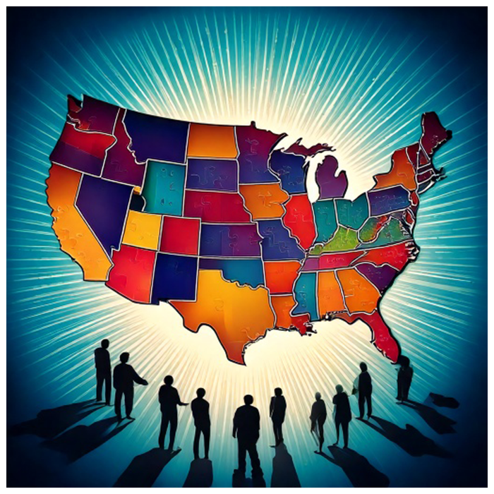
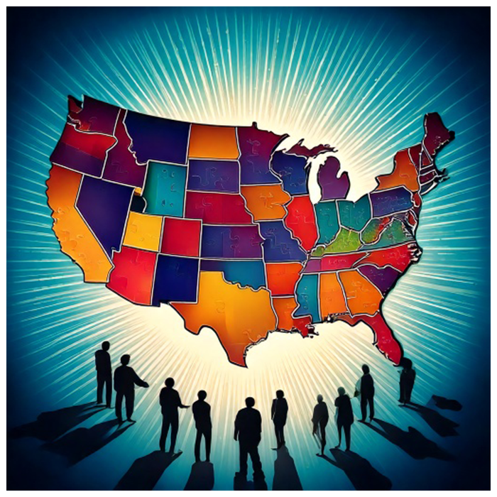

Union and Independence: Our Core Mission
The Unity Coalition's mission extends beyond typical political activism. We seek to mobilize independent networks into an adaptive, influential coalition structure that serves as the vital hinge between reformed major parties.
Like a flock of starlings demonstrating the power of adaptive collective movement, we prove that independents can unify and interdepend without sacrificing their autonomy. This balance between coordination and independence represents the new model of civic engagement America needs in the Information Age.
Our Four-Part Mission Strategy
1. Mobilize Independent Networks
We bring together independent voices across the political spectrum into an adaptive, influential coalition structure that maintains both individual autonomy and collective impact.
2. Present Reform Platform
We develop and advocate for reform agendas which candidates and bridging efforts can build upon, creating concrete pathways for meaningful change.
3. Facilitate Realignment
We work to forge mutual alliances within evolving political parties, creating connections that transcend traditional partisan divides.
4. Build Balanced Campaigns
We support key players for 2026 and beyond to build campaigns that balance autonomy and coordination, independent thinking and collective action.
Why Independents Must Unify and Connect
The Unity Coalition serves four essential functions in our political landscape:
- External Guidance: We help shape new alignments and set reform agendas that address America's most pressing challenges.
- Bridge Building: We connect emerging party functions, creating pathways for collaboration across traditional divides.
- Facilitation: We create environments for moderation and negotiation where constructive dialogue can flourish.
- Support Structure: We provide a coherent and cohesive third space where reform-minded Americans can find support, shared thinking, and coordinated action.
By creating this independent but interconnected infrastructure, we demonstrate that unity and independence are not opposing forces, but complementary strengths in a healthy democracy.
The Virtuous Aspects of Populism and Globalism
Rather than choosing sides in the populist-globalist divide, the Unity Coalition extracts and amplifies the virtuous aspects of both perspectives while rejecting their more destructive tendencies.
Populism at its Best
- Championing the liberties of average citizens
- Maintaining local, on-the-ground focus
- Upholding internal federalism and rule of law
- Balancing roles of state and federal governments
- Focusing on effective domestic policy solutions
Globalism at its Best
- Fostering systems integration and cooperation
- Preventing totalitarianism and chaos
- Upholding international rule of law
- Balancing roles of nations and multinational bodies
- Developing sustainable foreign policy solutions